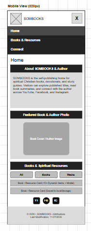
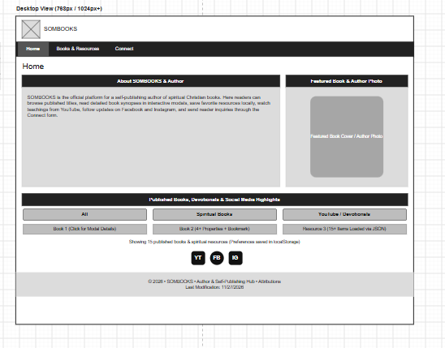

Deep Navy (#1E2A3A)
Usage: Page header and footer backgrounds, primary headings, and high-contrast structural accents.
SOMBOOKS
Self-Publishing & Christian Literature Hub
Selected Name: SOMBOOKS
Reason for Selection: SOMBOOKS is the established brand name for the author's self-published spiritual Christian books and associated YouTube, Facebook, and Instagram channels. Using SOMBOOKS keeps branding consistent across written works, digital media, and reader touchpoints.
Representative Domain Idea: sombooks.org (for planning/reference purposes)
The SOMBOOKS website serves as a central digital hub for a self-publishing author with existing spiritual Christian books and active social media channels. The site will showcase published books and literary resources, share the author's story and ministry/channel highlights from YouTube, Facebook, and Instagram, allow visitors to browse and filter items dynamically with detailed modal views, and provide a reader connection form with a confirmation view.
This site plan document exclusively uses the selected SOMBOOKS color palette below:
#1E2A3A)Usage: Page header and footer backgrounds, primary headings, and high-contrast structural accents.
#A85A2A)Usage: Section accent borders, interactive link/button highlights, badges, and wireframe emphasis markers.
#F7F5F0 & #FFFFFF)Usage: Main page background (#F7F5F0) and elevated content
cards/wireframe blocks (#FFFFFF) for calm readability.
#222629)Usage: Body copy, scenario text, and list items for accessible contrast on light surfaces.
Two Google Fonts are selected for the SOMBOOKS project to balance literary warmth with clean readability:
h1, h2,
h3) and book/feature titles to give a classic, bookish editorial tone.
